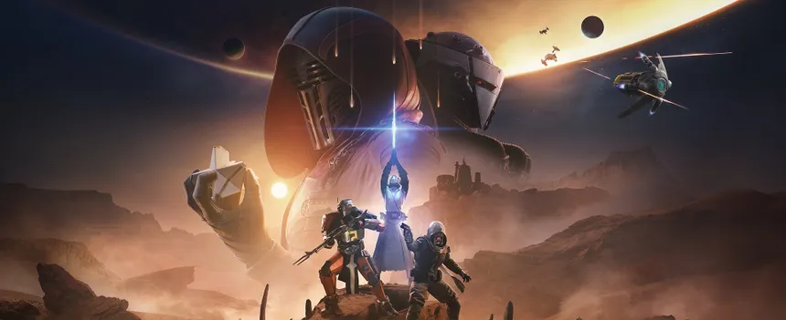

Current Expansion: Renegades
The Latest Expansion in Destiny 2 has arrived recently, called "Renegades". Being a collaboration with star wars, it takes heavy inspriation from that universe with new blaster weapons, and the praxic blade, which is Destiny's equivalent to a lightsaber.

Here is some important information about the Expansion without any spoilers:
The main enemy is Dredgen Bael - who is a wielder of the darkness - and is essentially an 'enemy guardian' (which is what a Dredgen is)
The new destination in this expansion is called the Lawless Frontier. This is a mix of other destinations - where there are specific activities that you are able to do that are tied to the expansion and give loot.
In these new activities you are able to use things called renegade abilities - which are special abilities that provide various benefits, like calling in ammo, or summoning a walker like vehicle for you to pilot and fight in.
One of the main selling points is the 'Praxic Blade' which is essentially a lightsaber in Destiny 2. It is very powerful, fun, and unique.
This expansion is $40
Overall, Renegades is a step up from the previous expansion, Edge of Fate, in terms of quality, story, and gameplay.
Back Home